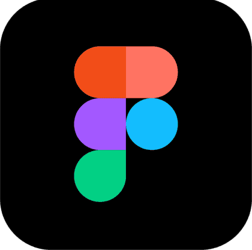
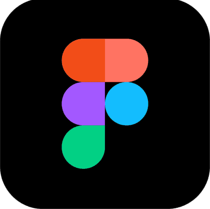

LOLA DELANNOY
Graphiste / Motion Designer basée à Lens, je suis passionnée par la création visuelle depuis l'enfance et par l'animation, domaine découvert lors de mes études en BUT MMI. Mon travail se concentre sur la conception graphique innovante et le storytelling à travers le motion design.


 
